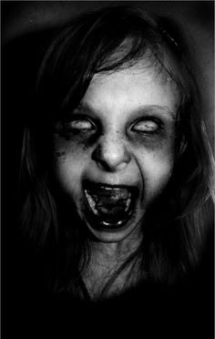

You must be a risk taker but how far can you go before realizing you made a mistake?
------------------------
Ted Martin and Sam Miller were good friends. They spent a lot of time together. On this particular night, they were sitting on a fence near the post office talking about one thing and another. There was a field of turnips across the road. Surprisingly, they saw something crawl out of the field and stand up. STOP SCROLLING.It looked like a man, but in the dark, it was hard to tell for sure. As quickly as it had appeared, it was gone. But soon it appeared again. It walked halfway across the road, then turned around and returned to the field. THIS IS A WARNING Then it came for a third time and started toward them. By now, Ted and Sam were scared and they started running. But when they finally stopped, they decided they were being silly and childish. IF YOUR'E READING THIS STOP HERE. They weren’t so sure what had scared them. So they decided to go back and get a better look. Pretty soon, they saw it, for it was coming to meet them. It was wearing black pants, a white shirt, and black suspenders. Sam said, "HAHAHAHAHA FOOLISH MORTAL" He courageously walked up to it and peered into its face. It FUCK hgd646&*&B%^GSIP{KMX'LSs that sFJEOWP OEFo its head. It lookKILL KILL KIL KILL HAHAHAAHHA ok one l&*SYHUGDUGHGY HNAKANKN he FUCK THIS and Sam ran, but the corpseDIEllowed them. WhenFKLEWP to STOP STOP Ted’sDWQI BFWQI hwui uwery7yrwqhy and FUCK THIS SHIT watched it, appalled. It stayed out GET OFF OF ME in the road for a while, seeming to watch them DIE DIE DIE DIE but once more, it vanished. No DHSAPHSAIo aJCCSKAlkw575839 u392`0`00394920`4 Ted grew heuiaoOIDjwd KILL THEM ALL nwc jw0 c ej0eq0]jr sickness killed him. ...........YOUV'E BEEN WARNED........... Toward the end, Sam sat up with him eveFJOEWP OEJFF died, he looked just like the frightening thing that they had encountered a year before.
